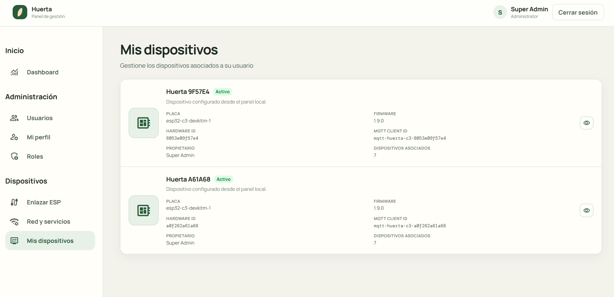
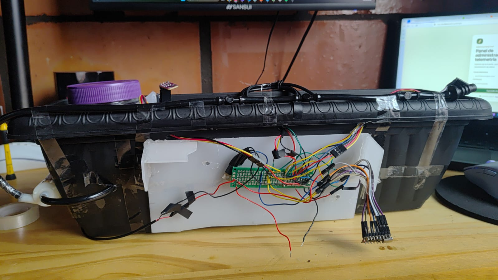

Aprovisionamiento guiado
Identifica el ESP, envía Wi-Fi por el canal serial y coordina el alta con el backend.
Documentación del front · Angular 21
Una interfaz web para enlazar el ESP32-C3, entender el estado de cada sensor, seguir la telemetría en tiempo real y ejecutar comandos sin exponer las credenciales del dispositivo.

Capacidades
El front acompaña el ciclo completo del dispositivo y presenta información técnica con una experiencia consistente para usuarios y administradores.
Identifica el ESP, envía Wi-Fi por el canal serial y coordina el alta con el backend.
SignalR actualiza el dashboard sin recargar la página y Chart.js representa cada medición.
Consulta lecturas y ejecuta comandos válidos según el tipo y estado del dispositivo.
Separa funciones generales y administrativas mediante sesión, guards, usuarios y roles.
Recorrido principal
La sesión del usuario autoriza el inicio del aprovisionamiento en la API.
Web Serial requiere una selección explícita del puerto en Chrome o Edge.
El nombre de la huerta y el Wi-Fi viajan en el flujo administrado; la contraseña no queda almacenada en Angular.
La interfaz presenta avance de Wi-Fi, claim y MQTT antes de confirmar el alta.

Experiencia construida
Las vistas conectan microcontrolador, dispositivo, unidad de medida y tiempo. El usuario puede ir desde el inventario general hasta la lectura exacta sin perder la relación entre los datos.

Placa, firmware, propietario, cliente MQTT y cantidad de dispositivos en una sola ficha.

Filtros, última lectura, mínimo, máximo, promedio, muestras y comando contextual.
Arquitectura
Las pantallas evolucionan dentro de su dominio y comparten únicamente los elementos transversales necesarios. Las rutas principales se cargan de forma diferida.
Dashboard, autenticación, dispositivos, telemetría, roles y aprovisionamiento.
Sesión, guards, interceptores, modelos, servicios, layout y tema.
API relativa, eventos en vivo y comunicación directa con el microcontrolador.
core/authEstado de sesión, token, guards y autorización administrativa.
core/servicesInventario, provisioning, conectividad, telemetría y Web Serial.
core/layoutApp shell, header y sidebar reutilizados por el área autenticada.
featuresComponentes y flujos agrupados por caso de uso.
Decisiones tomadas
La implementación prioriza contratos explícitos, estados predecibles y una navegación que no dependa de memoria temporal para recuperar recursos.
Microcontrolador y dispositivo viajan como parámetros, permitiendo recargar o compartir una vista sin depender de un signal temporal.
Los valores que cambian dentro de la vista se modelan con signals y computeds; RxJS conserva el trabajo asíncrono.
/api y /hubs permiten servir front y backend bajo el mismo origen mediante proxy.
Después de un comando se actualiza la gráfica sin desmontar la vista, conservando scroll y selección.
PrimeNG aporta componentes, mientras la paleta, tipografía y composición mantienen una identidad visual consistente.
Las selecciones incompatibles se excluyen y los comandos disponibles dependen del tipo de dispositivo.

Del prototipo a la interfaz
El front no representa un inventario abstracto: cada tarjeta y gráfica mantiene la relación con la placa, el pin, el tipo de conexión, la unidad y el estado informados por el firmware.
Seguridad en el cliente
El navegador participa en el flujo, pero la propiedad y el material sensible permanecen delimitados por el backend, el firmware y los canales correspondientes.
Las solicitudes autenticadas usan la sesión vigente y los guards restringen rutas.
La contraseña viaja por USB durante el provisioning y no se guarda en el estado persistente del front.
El backend y el dispositivo completan el intercambio; Angular no recibe la contraseña del broker.
Localhost funciona para desarrollo; una publicación remota debe utilizar HTTPS y un navegador compatible.
Ejecución y despliegue
El mismo contrato relativo funciona con el proxy de Angular durante el desarrollo y con Nginx dentro de Docker.
npm ci npm start # http://localhost:4200 # /api → backend:8080 # /hubs → SignalR
npm run build -- --configuration production docker build -f dockerfile ` -t gardens-front:latest .
site-assets/ y emplean rutas relativas.